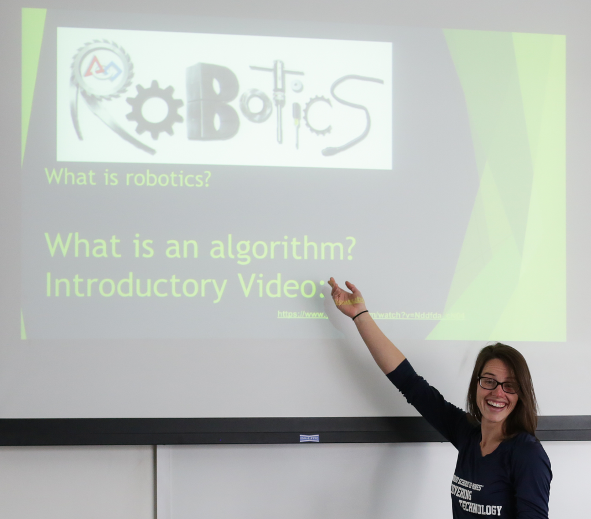

Feedback/Reviews
Spring 2018:
My favorite things were that we got guided help with learning about STEM, and we did very fun and interactive activities! Also, all of the instructors were great!- Participant in 5/6 program
I loved how friendly the instructors were! The games were really interactive and were presented with style and fun! I will definitely recommend coming here to my friends!!!
- Participant in 5/6 program
I like how we do different things every time we come here. I also like how we do fun activities related to what we learned in class.
- Participant in 3/4 program
I really liked making the slime and learning how to use binary. I also really liked the counselors.
- Participant in 3/4 program
Spring 2017:
Thank you for offering such a high quality, well organized, and fun educational program! You've inspired my artsy 5th grader to pursue engineering, and she surprisingly excelled at various STEM challenges offered over the summer (e.g., Golden library, robotics camp, etc). She even built us a doorbell!- Parent of 5th Grader
Spring 2016:
My daughter looks forward to her sessions with the students so much! Thanks to your program, she has decided she wants to do robotics in college because she loves to program and build.- Parent of 6th Grader
 I'm in hopes that this message will reach everyone involved with the Tuesday STEM class. I'm Kennedy's mom and she has loved the classes, the teachers and the college environment. I'm so happy and grateful to you all for such an awesome opportunity you give my daughter. You are very appreciated! Please let me know when the next session will be available.
I'm in hopes that this message will reach everyone involved with the Tuesday STEM class. I'm Kennedy's mom and she has loved the classes, the teachers and the college environment. I'm so happy and grateful to you all for such an awesome opportunity you give my daughter. You are very appreciated! Please let me know when the next session will be available.
- Parent of 4th grader
When my daughter met the woman who worked for Apple in Discovering Technology class last week, it opened up a whole new world of thinking and possibilities for her. I am SO excited by the doors this program has opened for my daughter, who is buzzing with enthusiasm for all things STEM and sees herself participating in this world professionally as a direct result of the class content, instructor enthusiasm, and just by seeing women in these positions doing these things. I can't thank you enough, it is life changing for this 12 year old.
- Parent of 6th grader
My daughter and her friend were in the class tonight and they loved it! They discussed only communicating in binary in their written communications; my daughter is typing notes with her dad in binary and she is so excited for the next class.
- Parent of 4th grader
Fall 2015:
I just love your program over all and I wanted to let you know that my 4th grader just LOVED the chemistry magic show last week. I stayed and watched it and guess what? I loved it too!!! Please tell the Professor thank you very much for her time and involvement. I loved the level of depth she went into for the experiments. Not just doing the "magic" but discussing what indicators let us know a reaction occurred and also that we can be tricked to think a reaction happened when it didn't. I liked that she gave some generalities about the chemicals but it was not too in depth. Also, I love that the nature of her presentation, and the STEM class in general treats the girls as intelligent, analyzing and thinking people. I wish I had participated in something similar as a girl.-Parent of 4th grader
 As a single mom with no child support and 4 jobs, I couldn't afford to put my 6th grade daughter in your after school STEM program, but a full scholarship allowed her to attend. This evening we were at dinner when she announced that she has decided to become a biomedical engineer and work with robotic prosthetics. She then had to explain to me what that even meant. She was so alive and dynamic and passionate as she came up with idea after idea about how to help patients who need prosthetics to experience an enhanced lifestyle through technology. And she is only half way through the STEM program! I wanted to thank you sincerely for all you do for these girls. You are opening doors to whole new world for them, a world I couldn't even talk about with her as I don't know anything about it. Without you, neither would she.
-Parent of 6th grader
I wanted to let you know how much fun my daughter had during the prosthetic leg challenge. It was a great way for her to get more understanding of the challenges people face when they are missing a limb as well. So, thank you for not only teaching my daughter stem, but allowing her to learn to be more empathetic too.
-Parent of 5th grader
Spring 2015:
The best part of the program is we got to build amazing things.- 3rd/4th grade girl
Classes were fun and interesting.
- Parent of 3rd/4th grader
I love that this is science for girls taught by girls. We did a science program at school, but my daughter and her friend were the only girls in a room full of boys (including my own son). This is a great program!
- Parent of 3rd/4th grader
I really liked how creative the projects are!!
- 5th/6th grade girl
I think discovering tech is very fun, creative and cool. I would recommend it to my friend.
- 5th/6th grade girl
My daughter's interest in science has really strengthened since taking part in this program.
- Parent of 5th/6th grader
Fall 2014:
Thank you for putting this program together. It is wonderful to expose my daughters to STEM at an early age!!- Parent of 3rd/4th grader
This was a great opportunity for my daughter. The subjects she most wants to improve in are now math and science.
- Parent of 3rd/4th grader
Looking forward to the spring program.
- Parent of 3rd/4th grader
I'm thrilled with my daughter's interest in the engineering and technology fields as a result of this program. She always responds to people who ask her what she wants to do when she grows up that she wants to be an engineer :) !
- Parent of 5th/6th grader
Thank you for exposing my daughter to science in such a positive way! She has enjoyed it and done some of it at home!
- Parent of 5th/6th grader
My daughter loved it. Her favorite part was the robotics lab. Thank for offer this program. We will see you all in the spring.
-Parent of 5th/6th grader
Spring 2014:
My daughter initially did not want to attend this program. I signed her up because I wanted to expose her to STEM. When I told her it was STEM she frowned. The only reason she was ok to attend is because her friends were in there. After the first session she was so excited and loved it. She even came home and wrote a binary note to her classmate. She then completely changed her views on STEM and looked forward to the remaining sessions. Great job to everyone involved in putting this on for the girls!- Parent of 3rd/4th grader
We loved it - a TREMENDOUS value and experience for our daughter. She can't wait to start again in the fall! Thank you!
- Parent of 3rd/4th grader
Great program. We feel lucky the School of Mines is so close and offers such amazing classes for kids!
- Parent of 3rd/4th grader
It is a great program. Thanks for making it available to our girls.
- Parent of 5th/6th grader
Thank you so much! My daughter had a great time, learned a lot and became comfortable in the university environment.
- Parent of 5th/6th grader
Good job guys, and I loved the teachers.
- Parent of 5th/6th grader